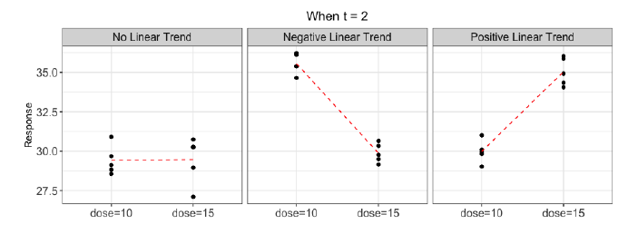
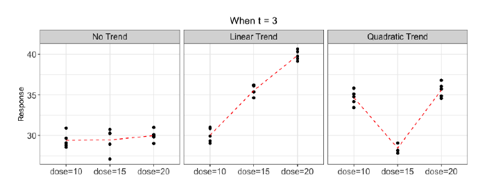
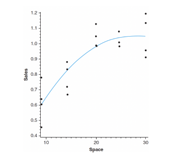

Section 4.2 Trend Analysis
We have an ANOVA setup: values of a quantitative variable as treatment levels. For example, the effect of varying doses of a drug on patients, the effect on yield due to increased amounts of fertilizer, etc. After testing \(H_0: \mu_1 = \cdots \mu_t\text{,}\) it would be our interest to examine whether a trend exists in the response variable over the varying levels of the quantitative factor.
The typical trends seen here are polynomial; so, we use a set of orthogonal contrasts called orthgonal polynomial contrasts to test the existence of such a trend. We assume the balanced case and that treatment levels are equally spaced.
When \(t = 2\text{,}\) the only possible trend is linear. Testing \(H_0: \mu_{10} - \mu_{15} = 0\) (see below) can be useful to determine whether there exists an evidence of linear trend. If we reject \(H_0\text{,}\) there is evidence of linear trend of response over the treatment levels.

When \(t = 3\text{,}\) there are two possible trends: linear and quadratic. For some constants \(a,b\text{,}\) we have the following equation:
\begin{equation*}
\text{Response } = a\cdot \text{Dose}^2 + b\cdot\text{Dose}
\end{equation*}

Consider each contrast corresponding to each trend sequentially:
We consider \(H_0: -\mu_{10} + \mu_{20} = 0\) to determine if \(b=0\)
We consider \(H_0: \mu_{10} - 2\mu_{15} + \mu_{20} = 0\) to see if \(a = 0\text{.}\)
In (1), if we fail to reject \(H_0\text{,}\) there is no significant evidence of linear trend; if we reject, then either linear or quadratic trends would exist. In (2), if we fail to reject \(H_0\text{,}\) then there is no significant evidence of quadratic trend; thus, we conclude that only linear trend would exist. If we reject \(H_0\text{,}\) this indicates that a quadratic trend would exist.
We can generalize the trend analysis for \(t \gt 3\) as well. To set up the contrasts for trend analysis, we can use a table for coefficients. In general, if there are \(t\) treatment levels, then a polynomial with degree at most \(t-1\) can be considered. Lower-degree curves are easy to interpret but may not be a good fit; higher-degree curves are more complicated, but often provide good fit.
We investigate any existence of trends only if we reject \(H_0: \mu_1 = \cdots \mu_t\text{,}\) which implies that \(SSTrt \gt SSE\text{.}\) For \(t = 3\text{,}\) given orthogonal polynomial contrasts \(L_1,L_2\) we have
\begin{equation*}
SSC_{L_1} + SSC_{L_2} = SSTrt
\end{equation*}
If there is significant evidence of linear trend, \(SSC_{L_1}\) takes a large proportion of \(SSTrt\) compared to \(SSC_{L_2}\text{;}\) for a quadratic trend, the reverse is true.
For \(t \gt 3\text{,}\) given orthogonal polynomial contrasts \(L_1,L_2,...,L_{t-1}\text{,}\) we have
\begin{equation*}
\sum_{i=1}^{t-1} SSC_{L_i} = SSTrt
\end{equation*}
It is often the case that the first few \(SSC_{L_i}\) dominate \(SSTrt\) while the other \(SSC_{L_i}\) are small; thus, it leads us to reject \(H_{0i}: L_i = 0\) for the first few values of \(i\) (which means there is significant evidence of trend corresponding to contrast).
The last few \(SSC_{L_i}\) are not large enough for \(H_{0i} : L_i = 0\) to be rejected means that there is insignificant evidence of trend corresponding to contrast. We often call the sum of the last few \(SSC_{L_i}\) the SS for lack of fit.
Example 4.2.1.
To determine whether the sales of apples can be enhanced by increasing the size of hte apple display in supermarkets, 20 large supermarkets are randomly selected from those in a large city. Four stores are randomly assigned to have either 10, 15, 20, 25, or 30 square feet for display of apples. Sales of apples per customer for a selected week is the response variable below.
| Space |
10 sq. ft. |
15 sq. ft. |
20 sq. ft. |
25 sq. ft. |
30 sq. ft. |
|
0.778 |
0.665 |
0.973 |
1.003 |
1.125 |
|
0.458 |
0.830 |
1.029 |
1.073 |
1.184 |
|
0.638 |
0.716 |
1.106 |
0.979 |
9.904 |
|
0.602 |
0.877 |
0.964 |
0.981 |
0.951 |
| Mean |
0.618 |
0.772 |
1.018 |
1.009 |
1.041 |
Which trend would be appropriate?
Solution.
We arrive at the following ANOVA table:
| Source |
df |
SS |
MS |
F |
| Space |
4 |
0.5628 |
0.1407 |
13.72 |
| Error |
15 |
0.1538 |
0.0103 |
| Total |
19 |
0.7166 |
Note that we reject \(H_0:\mu_i = \mu_j\) for \(i,j\in \lrbrace{1,...,5}\) since \(F \gt F_{0.05,4,15} = 3.06\text{.}\) This means that we can begin the trend analysis.
First, we set up the appropriate contrasts for each trend:
\begin{align*}
L_1 \amp = -2\mu_1 - \mu_2 + \mu_4 + 2\mu_5 \\
L_2 \amp = 2\mu_1 - \mu_2 - 2\mu_3 - \mu_4 + 2\mu_5
\end{align*}
by using the orthogonal polynomials table. Second, we compute each \(SSC_{L_i}\text{.}\)
\begin{equation*}
SSC_{L_1} = \dfrac{\lrpar{-2(0.619) - 0.772+1.009+2(1.041)}^2}{\dfrac{1}{4}\lrpar{(-2)^2 + (-1)^2 + 1^2 + 2^2}} = 0.4674
\end{equation*}
\begin{equation*}
SSC_{L_2} = \dfrac{\lrpar{2(0.619) - 0.772 -2(1.018) -1.009 + 2(1.041)}}{\dfrac{1}{4}\lrpar{(2)^2 + (-1)^2 + (-2)^2 + (-1)^2 + (2)^2}} = 0.0706
\end{equation*}
\begin{equation*}
SSC_{L_3} + SSC_{L_4} = SS\text{ Lack of fit}
\end{equation*}
Third, we have additional rows of SS corresponding to each trend:
| Source |
df |
SS |
MS |
F |
| Space |
4 |
0.5628 |
0.1407 |
13.72 |
| Linear |
1 |
0.4674 |
0.4674 |
45.58 |
| Quadratic |
1 |
0.0706 |
0.0706 |
6.88 |
| Lack of fit |
2 |
0.0248 |
0.0248 |
1.20 |
| Error |
15 |
0.1538 |
0.0103 |
| Total |
19 |
0.7166 |
Under \(\alpha = 0.05\text{,}\) we reject both \(H_0: L_1 = 0\) and \(H_0: L_2 = 0\) as \(F_{0.05,1,15} = 4.54\text{.}\) This means that both linear and quadratic trends are significant. See the plot below.
